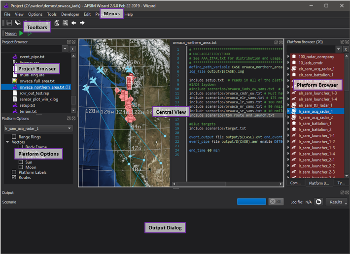

Wizard Reference Guide¶
The Wizard Reference Guide lists the features included within Wizard organized into various categories.
Start-up¶
Application Layout¶
This image above shows the layout of the Wizard application with the major components labeled.
Many of these components are dockable and may be moved to other locations in the window, or into their own ‘floating’ windows.
Menus - Menus Control the behavior of the application
Dialogs, Views and Toolbars¶
Most of the Dialogs and Toolbars can be accessed through the View menu. A few are accessed through the Context menu.
Platforms¶
Application Configuration¶
Other Tools¶
References¶
Extended Capabilities¶
- Model Import - Wizard
- ACO Importer - Wizard
- Astrolabe - Wizard
- ATO Importer - Wizard
- Color Utils - Wizard
- Comms Visualization Tool - Wizard
- Command Chain Browser - Wizard
- Constellation Maker - Wizard
- Coverage Overlay - Wizard
- CRD Importer - Wizard
- Cursor Info - Wizard
- Demo Browser - Wizard
- ENGAGE - Wizard
- Error List - Wizard
- Event Output Editor - Wizard
- Interactive Output - Wizard
- Map Annotation - Wizard
- Map Display - Wizard
- Map Hover Information - Wizard
- Map Toolbar - Wizard
- Model Viewer - Wizard
- Mystic Launcher - Wizard
- OSM Converter - Wizard
- Output - Wizard
- Pattern Visualization - Wizard
- Performance - Wizard
- Platform Browser - Wizard
- Platform Details - Wizard
- Platform Part Manager - Wizard
- Platform and Route Movement - Wizard
- Position Converter Tool - Wizard
- Post Processor - Wizard
- Project Browser - Wizard
- Rotate Dialog - Wizard
- Routes - Wizard
- Route Browser - Wizard
- Satellite Inserter - Wizard
- Scenario Analyzer
- Scenario Importer
- Script Debugger - Wizard
- SIMDIS
- Simulation Manager - Wizard
- SPLAT - Wizard
- Table Plotter - Wizard
- Task List - Wizard
- Terrain Tools - Wizard
- Tether View - Wizard
- Translate Dialog - Wizard
- Type Browser - Wizard
- Unit Conversion - Wizard
- Unit Converter Tool - Wizard
- Video Capture - Wizard
- Visibility - Wizard
- Zone Editor - Wizard